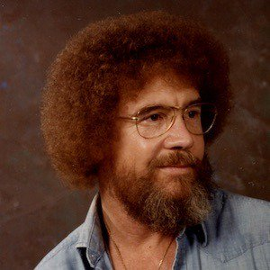

About Bob
Robert Norman Ross was an American painter, artist instructor and tv host. His early life was fairly typical for the time period until early 1980. From 1980 until 1983, Bob went through some very dark times, turning to drugs and alcohol to ease his troubled artist mind. For a short time in 1982, while struggling with addiction, Bob carried on as a male prostitute in efforts to support his drug habits. Realizing that “hook’n” was not for him, he decided to get clean and was in and out of rehab with a short bit in Leavenworth for indecent exposure. In July of 1982, after his incarceration, Bob underwent a minor lobotomy to ease the pressures of addiction which allowed him a full recover from all his issues. Finally free from addiction and the fuzz, Bob went on to create and host an instructional television program that aired from 1983 to 1994 on PBS in the United States. He met his untimely death on July 4th, 1995 durring an attempt to paint a self portrait while bungee jumping from the Washington Monument. Turns out the rope was to short…
While the world thought that was the end for Bob, it turns out that shortly before his death Bob had been “turned” and that the whole “death by self portrait” was just a hoax to hide his transformation. Laid to rest in a tomb deep in the misty forests of Transylvania (where its not uncommon for folks to rise from the dead for one reason or another), is where Bob was able to complete his transformation from human to vampire in solitude. It was there he perfected his new vampiricle talents (turns out its also not uncommon in that part of the world for folks to go missing and later be found with no blood in their system).
In the early days of his imortallity, Bob spread mayhem and madness across eastern Europe, Asia and the really high-end parts of South Africa. As he gained his preverbal “vampire legs” he began to feel his "Nosferatu" oats being sowed and desired to settle back into a slightly more normal pace of undeadness. While living/undead in Durban, South Africa he became close with others with the same demon undeadness living/undead on the edges of society. David Bowie, Curt Cobain, Joseph Stalin, Adolf Hitler and Bill Cosbey to name a few. Together they formed an unofficial group to further the rights of vampires and other various demonic groups. Officially organizing in 2004 as the nonprofit currently know as the Association Of Passive/Aggressive Vampires And Demons (APAVD) to commemorate the 10 year anniversary of the opening for the film Interview With A Vampire”, the group seeks to push for more humain ways of treating their food sources and educating the mortal races on the benefits of “being” a source of nutrition for the superior forms of undead. Bob currently resides in Melbourne, Australia roaming the night seeking human victims while serving as a member of the board at APAVD.